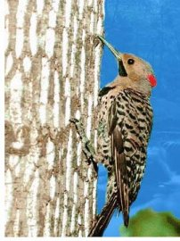
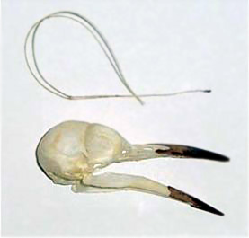
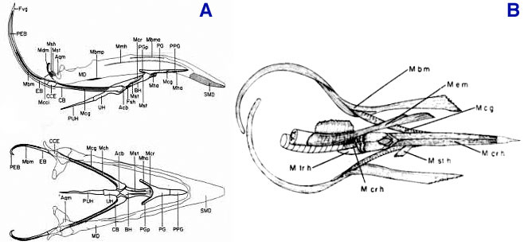
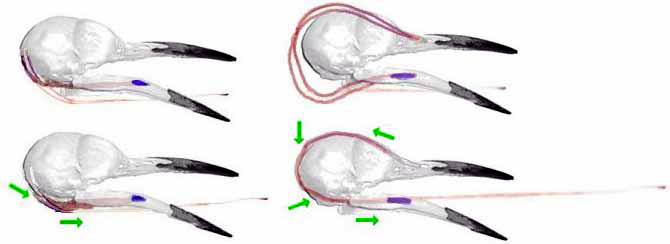
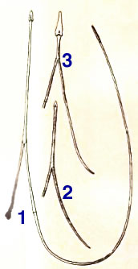

Anatomía y Evolución de la Lengua del Pájaro Carpintero
por Rusty Ryan

|
 |
Recientemente, un número de individuos y organizaciones creacionistas han creado sitios web que promocionan al picabueyes como un ejemplo de un organismo que "no podría haber evolucionado".
Al presentar su argumento, han ofrecido una gran cantidad de información que está distorsionada o manifiestamente falsa en cuanto a la anatomía y fisiología del picabueyes, especialmente en relación con su notablemente larga lengua.
El propósito de este sitio web es proporcionar información precisa a quienes, de otro modo, podrían aceptar las afirmaciones erróneas de los creacionistas a pie de letra.
Los picos (familia Picidae) son aves familiares cuya anatomía única les permite explotar nichos ecológicos inusuales. Muchas de las especies de esta familia muestran adaptaciones interesantes que les permiten perforar agujeros en madera sólida y no podrida en busca de insectos y otros presas.
Una de las adaptaciones más fascinantes es la lengua del picabuey. A diferencia de las lenguas humanas, que son principalmente musculares, las lenguas de las aves están rígidamente sostenidas por un esqueleto de cartílago y hueso llamado aparato hioideo. Todos los vertebrados superiores tienen hioideos en una forma u otra; puedes sentir las "cuernas" de tu propio hueso hioideo en forma de U pellizcando la parte más alta de tu garganta entre el pulgar y el índice. Nuestro hioideo sirve como sitio de anclaje para ciertos músculos de nuestra garganta y lengua (1).
|
 |
Sin embargo, el aparato hioideo en forma de Y de las aves se extiende hasta la punta de sus lenguas. La bifurcación de la "Y" se sitúa justo delante de la garganta, y es en esta zona donde se fijan la mayoría de los músculos del hioideo. Dos estructuras largas, los "cuernos" del hioideo, crean hacia atrás desde esta zona y proporcionan sitios de inserción para los músculos protractores que nacen en la mandíbula inferior. Los cuernos hioideos de algunas especies de picos negros son bastante sorprendentes en apariencia, ya que pueden crecer hasta la parte superior de la cabeza y, en algunas especies, rodear la órbita ocular o incluso extenderse en la cavidad nasal (2), (3).
La apariencia inusual del "esqueleto de la lengua" del picabueyes ha inspirado a los creacionistas a utilizarlo como ejemplo de una estructura tan extraña que no podría haber evolucionado mediante mutaciones al azar que produjeran intermediarios funcionales. Como muestra la siguiente información, sin embargo, la extraña lengua de los picabueyes es en realidad simplemente una versión alargada de la que se encuentra en todas las aves, y es de hecho un ejemplo perfecto de cómo las estructuras anatómicas pueden ser moldeadas en nuevas formas mediante mutaciones y selección natural.
Varios sitios web y folletos creacionistas con los que he tenido contacto afirman que la lengua del picapájaro "está anclada en la fosa nasal derecha",(C1) o crece "hacia atrás" desde la cavidad nasal (C2). Las conexiones principales entre el aparato hioideo del picapájaro y el resto de su cuerpo son músculos y ligamentos que unen el hioideo con la mandíbula (hueso de la quijada), el cartílago de la garganta y la base (no la parte superior) del cráneo - la misma configuración encontrada en todas las demás aves. En los adultos de algunas especies, los cuernos hioideos pueden eventualmente crecer hacia adelante y hacia la cavidad nasal desde arriba - sin embargo, el hioideo y la lengua ciertamente no crecen DESDE la cavidad nasal.
La lengua aviar propiamente dicha cubre la parte anterior del aparato hioideo - las partes posteriores, incluidos los cuernos hioideos, funcionan como una estructura de soporte.
Las longitudes de los cuernos hioideos en diferentes aves varían bastante, pero todas son funcionalmente bastante similares. El pollo (figura 3A) ofrece un ejemplo bien estudiado de un ave que no está estrechamente relacionada con el picapájaro, pero que comparte todas las características esenciales de los hioideos del picapájaro (figura 3B).
|
 |
Las cuernas hioideas del pollo y la vaina fascial en la que descansan (la fascia vaginalis - Fvg) se extienden hacia atrás a ambos lados de la garganta, luego se enrollan hacia atrás detrás de las orejas del pollo hasta la parte posterior de la cabeza (figura 3A).
La vaina misma se forma a partir de un saco de fluido lubricante en el que crecen las cuernas a medida que se desarrollan. Esta lubricación otorga a las cuernas cierta libertad para deslizarse hacia arriba o hacia abajo sobre la vaina mientras la lengua se introduce o se extrae. Existen algunas conexiones elásticas entre la vaina y las cuernas, pero ciertamente no están "ancladas" al cráneo.
Observe las inserciones de los músculos branchiomandibulares (etiquetados como "Mbm"), que se conectan cerca del extremo de los cuernos hioideos, bajan a través de la "vainica" y se fijan en el centro del hueso de la mandíbula (inserciones etiquetadas como "Mbma" y "Mbmp"). Estos son los músculos que deslizan los cuernos hacia abajo dentro de las vainicas, los aprietan contra el cráneo y, por lo tanto, extienden la lengua rígida aviar (4).
Por lo tanto, los cuernos gemelos del hioides de un ave sirven únicamente como sitio de anclaje para los músculos que en realidad se originan en la mandíbula inferior; la contracción de estos músculos tira de los cuernos y del aparato hioidal completo hacia adelante y contra el cráneo, empujando la lengua fuera de la boca como una lanza.
Una vez que se comprende este concepto, es obvio que alargar las cuerdas hioideas y los músculos asociados, sin realizar ningún otro cambio en la estructura o función general, daría efectivamente al ave una lengua más larga y le permitiría protruirla más allá de la boca. De hecho, esto es exactamente lo que ocurre cuando un picabuey joven crece hasta convertirse en adulto.
Cuando un búho real nace, sus cuernos hioideos solo se extienden hasta detrás de sus orejas, como los de un pollo. A medida que crece, la vaina, los cuernos y el músculo se alargan, curvándose hacia adelante sobre la cabeza y entrando en la cavidad nasal (5).
|
 |
En aves con cuernos más largos, hay mucha holgura presente en los cuernos en reposo, y la contracción del Mbm los estira y tensa contra el cráneo a medida que se extiende la lengua. Por lo tanto, en algunas especies, el deslizamiento de las puntas puede ser mínimo (véase la figura 4) (6).
Compare las cornamentas del hioides del pollo (figura 3) con las del adulto flicker (figuras 4 y 5.1). Observe que, aunque las cornamentas del flicker son mucho más largas, cada una contiene dos huesos (los ceratobranciales y epibranciales) y una pequeña articulación, con un trozo de cartílago en la punta del epibrancial, exactamente igual que en el pollo. Existen algunas otras diferencias morfológicas menores, como la presencia del hueso urohial (UH) en el pollo, pero la homología general es clara.
|
 |
Como se mencionó anteriormente, los cuernos hioideos de un polluelo parpadean (y de otros picabueyes de lengua larga) son bastante cortos (véase la figura 5.2) y son comparables a los de especies de picabueyes de lengua corta, como el picapinos (fig. 5.3), que, a su vez, tiene cuernos hioideos no más largos que los de muchas aves cantoras (5).
Solo con la edad, los cuernos hioideos del colibrí crecen hasta la parte superior de la cabeza, hacia adelante y hacia la cavidad nasal, donde la vaina se fusiona con la membrana nasal. Esto tiene sentido adaptativo, ya que el joven colibrí es alimentado por sus padres, y una lengua larga solo sería un obstáculo.
Los cambios genéticos necesarios para tal modificación son bastante menores. No se requieren nuevas estructuras, simplemente un período de crecimiento extendido para alargar una estructura existente. Es probable que en especies ancestrales de picabueyes que comenzaron a buscar larvas más profundamente en los árboles, aquellos picabueyes con mutaciones para un mayor crecimiento del cuerno hioideo tuvieran una ventaja de aptitud, ya que podían extender su lengua más lejos para alcanzar la presa. Algunos picabueyes no necesitan lenguas largas, y por lo tanto, los genes que acortaban los cuernos hioideos fueron seleccionados. El picabueyes,(2) por ejemplo, perfora pequeños agujeros en los árboles y luego usa su lengua corta para comer la savia que gotea en la superficie del árbol (y los insectos que se adhieren a ella).
Muchas otras adaptaciones interesantes se observan en diferentes especies de picos. Algunas especies, por ejemplo, tienen articulaciones modificadas entre ciertos huesos del cráneo y la mandíbula superior, así como músculos que se contraen para absorber el impacto del martilleo. Fuertes músculos del cuello y de las plumas de la cola, y un pico similar a un cincel son otras adaptaciones de martilleo que se observan en algunas especies. Las mismas fuentes creacionistas que presentan información inexacta sobre la lengua suelen afirmar que el gran número de adaptaciones encontradas en los picos proporciona un argumento contra la evolución. Establecen que todas estas adaptaciones tendrían que haber surgido "al mismo tiempo", o de lo contrario todas habrían sido inútiles. Por supuesto, tal argumento ignora el hecho de que muchas especies de picos vivas hoy en día carecen de estas adaptaciones, o las poseen en una forma reducida.
Por ejemplo, el colibrí utiliza su larga lengua principalmente para atrapar presas desde el suelo o desde debajo de la corteza suelta. Tiene pocas adaptaciones amortiguadoras de impactos y prefiere alimentarse en el suelo o picar madera podrida y corteza, hábitos observados en aves fuera de la familia de los picos (7). Un "continuum" en estructuras craneales, desde poco hasta altamente especializado para golpear, se observa en diferentes géneros (grupos de especies relacionadas) de picos vivos hoy en día.(8) En su clásico "Aves de América", John James Audubon describe las leves variaciones en la longitud del cuerno hioideo encontradas en diferentes especies de picos vivos (9).
Los picograndes y picogargantillas, miembros de la familia de los picos que parecen algo como un cruce entre aves cantoras y picos, poseen muchas adaptaciones similares a las de los picos, como lenguas largas. Sin embargo, no poseen plumas rígidas de la cola ni ciertas otras especializaciones para martillar. Se cree que son similares a la especie ancestral de los picos especializados de hoy en día.
Otros enlaces: Sitios creacionistas que proporcionan información falsa sobre los picos
|
Referencias
1. Moore, Keith L. Anatomía Clínicamente Orientada. 1999, Lippincott, Williams, y Wilkins
2. Goodge, WR. 1972. Evidencia Anatómica para las Relaciones Filogenéticas Entre los Picosos, The Auk, 89: 65-85
3. Short, LL. Picosos del Mundo. 1982, Museo de Historia Natural de Delaware
4. Homberger, DG y Meyers, RA. 1989. Morfología del Aparato Lingual del Gallipavo Doméstico, Gallus gallus, Con Atención Especial a la Estructura de las Fascias, The American Journal of Anatomy, 186: 217-256 - Descripción anatómica muy detallada de las estructuras de la mandíbula y la lengua de la especie aviar más estudiada.
5. Lucas, FA. 1895. Las Lenguas de los Picosos. U.S. Dept. of Agriculture. División de Ornitología y Mamíferos. Boletín no. 7 - Buenas diagramas de los hioides de diferentes especies, así como de adultos vs. polluelos de picosos.
6. Bock, WJ 1999. Morfología Funcional y Evolutiva de los Picosos. The Ostrich, 70: 23-31 - Un análisis funcional completo y actualizado de las adaptaciones de la lengua y el cráneo de los picosos.
7. Short, LL. 1973. "Picoteo" por un Barbete de Garganta Roja. The Auk, 90: 909-910 - Esta fuente describe martilleo y alimentación tipo picoso en especies fuera de la familia de los picosos y que no comparten adaptaciones únicas de los picosos. El autor proporciona una hipótesis interesante sobre la divergencia evolutiva de los picosos y los barbetes.
8. Kirby, VC. 1980. Una modificación adaptativa en las costillas de los picosos y piculets (Picidae). The Auk, 1980; 97(3): 521-532 - Describe un continuo de adaptaciones de costillas en especies de picosos menos y más especializadas. Comentarios sobre trabajos anteriores que encontraron un continuo similar en especializaciones del cráneo (Burt, WH. 1930. Univ. California Publ. Zool. 32: 455-524).
9. Audubon, John James. 1840-1844. Las Aves de América - Como adición a la entrada para "pico alado dorado" (Pico de Cola Roja), Audubon escribe:
"Existe una gradación muy curiosa en el grado de elongación de las cuernas del hueso hioides en los diferentes Picosos Americanos, algunos de los cuales consecuentemente tienen el poder de empujar su lengua hacia afuera a un mucho mayor grado que otros. Así: En Picus varius [Pico de Cola Roja], las puntas de las cuernas del hueso hioides llegan solo hasta el borde superior del cerebelo, o la mitad de la región occipital. En Picus pubescens, no avanzan más allá de opuesto al centro del ojo. En Picus principalis, llegan un poco antes del borde anterior de la órbita, o la distancia de 1/2 pulgada desde la nariz derecha. En Picus pileatus, se extienden a la mitad entre el borde anterior de la órbita y la nariz. En Picus erythrocephalus, llegan a 3 doceavos de pulgada desde la base del pico. En Picus tridactylus, llegan a la base de la cresta de la mandíbula superior. En Picus auratus [Pico de Cola Roja] , alcanzan la base de la membrana nasal derecha. En Picus canadensis, se curvan alrededor de la órbita derecha hasta opuesto al centro del ojo debajo. Por último, en Picus villosus, reciben el máximo de su desarrollo, y, como se representa en las figuras acompañantes, se curvan alrededor de la órbita derecha, para llegar al nivel del ángulo posterior del ojo." [Nota - muchos de los nombres latinos usados por Audubon no reflejan el uso y clasificación actuales].
10. Darwin, Charles. 1859. El Origen de las Especies
"Al considerar el Origen de las Especies, es bastante concebible que un naturalista, reflexionando sobre las afinidades mutuas de los seres orgánicos, sobre sus relaciones embriológicas, su distribución geográfica, su sucesión geológica, y otros hechos similares, podría llegar a la conclusión de que cada especie no había sido creada independientemente, sino que había descendido, como las variedades, de otras especies. No obstante, tal conclusión, aunque bien fundada, sería insatisfactoria, hasta que se pudiera demostrar cómo las innumerables especies que habitan este mundo han sido modificadas para adquirir esa perfección de estructura y co-adaptación que más justamente excita nuestra admiración. Los naturalistas continuamente se refieren a condiciones externas, como el clima, la comida, &c., como la única posible causa de variación. En un sentido muy limitado, como veremos más adelante, esto puede ser cierto; pero es absurdo atribuir a meras condiciones externas, la estructura, por ejemplo, del piquero, con sus pies, cola, pico y lengua, tan admirablemente adaptados para atrapar insectos bajo la corteza de los árboles."
Agradecimientos
Gracias a Jorge de Leon y Kristof Zyskowski de la Biblioteca de Ornitología de Yale.